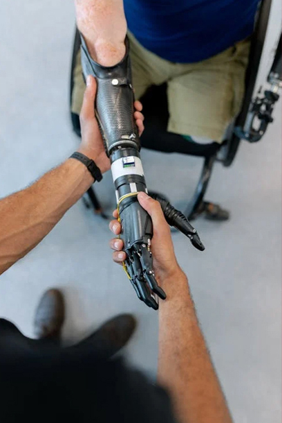

Situando a la Accesibilidad
UX Team • 2022

Accesibilidad Digital
Surge a partir de los derechos de las personas con discapacidad
Definimos la discapacidad
Un concepto que evoluciona y resulta de la interacción entre:
Modelos de discapacidad
Modelo Médico (Paternalismo y discriminación)
Modelo Social
(Equiparación y Autonomía) con perspectiva en DDHH.
¿Por qué nos importa?
Porque podemos hacer mucho, con poco.
La Convención
Sobre los Derechos de las Personas con Discapacidad.
Diciembre de 2006
Firmada por 164 países
Ratificada por 182 países
Argentina
Ratifica en 2008
2014 obtiene jerarquía institucional
Marco de los DDHH
La primera en que participaron los sujetos objeto de la misma.
"Nada de nosotros sin nosotros"
Situaciones de Discapacidad
Aguante el team perro


Ayudas técnicas
Elemento, pieza de equipo o producto ya sea común del mercado, adaptado o especial que es usado para incrementar, mantener o mejorar las capacidades funcionales de personas con discapacidad.
Usabilidad
Efectividad, eficiencia y satisfacción:
Accesibilidad
Efectividad, eficiencia y satisfacción: